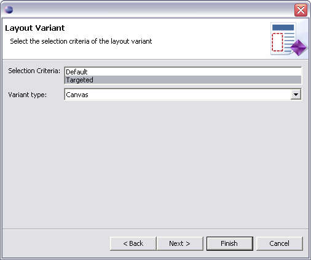
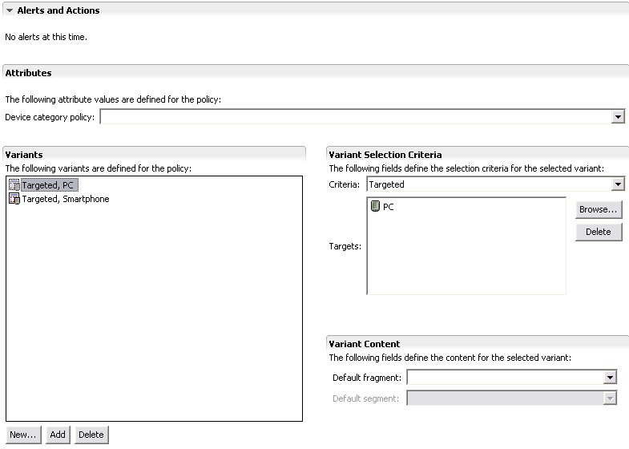

Creating a layout
In this module, you'll learn the basics of creating an layout policy. We use layouts to
specify the physical position of elements on pages. To display content on a range of devices
you need to specify a layout policy that contains variants that are suitable for different
device characteristics.
We will start by creating a layout policy for the Jive's Home Page. The task is very like
creating an image policy. This time you will learn a quick way to choose a wizard.
In the next two modules we will design two specific layouts, one for PC, and one for the
Smartphone variants. Finally, we will create a article page layout, with the designs for the
PC and Smartphone variants, as well.
Adding a layout 
- Right click on the jive/WebContent/mcs-policies folder, and choose
New | Layout from the context menu
- Call the new layout 'jivehome' and then click the Next button. The
wizard will automatically add the .mlyt layout file extension.
Choosing a device
- Choose 'Targeted' in the Selection Criteria box, select 'Canvas' as
the Variant type and click the Next button

- Type 'PC' in the top box to filter the list of available devices
- From the filtered list of devices choose 'PC', by checking the box next to it, and click
the Finish button. The new layout file called 'jivehome.mlyt' is displayed
in the jive/WebContent/mcs-policies folder and is opened in the Layout
editor.
- Now click the New button under the variants section and add a layout
variant for the Smartphone
- The editor has two pages, an Overview page listing the layout variants and their general
attributes, and a Design page where you can develop your layout. You will learn more about
using the Design page in the next module.
